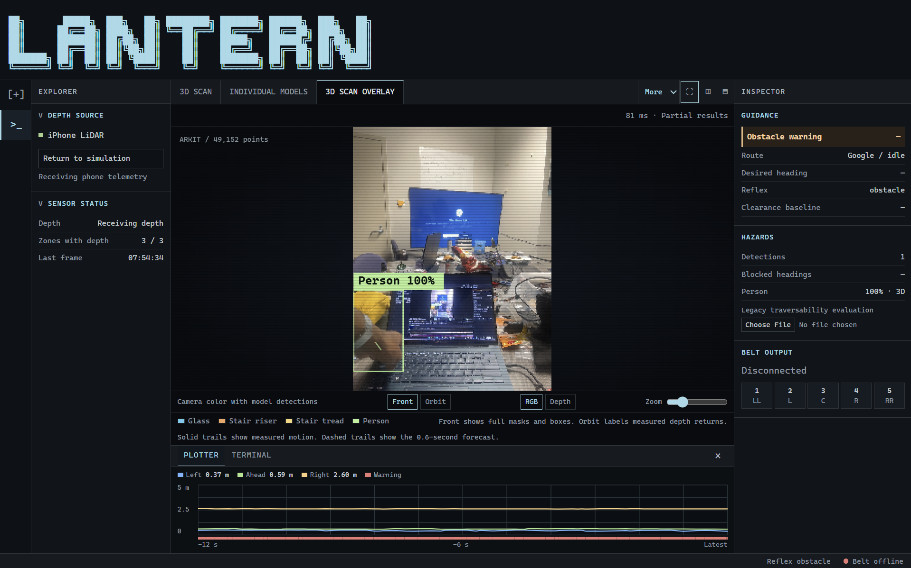
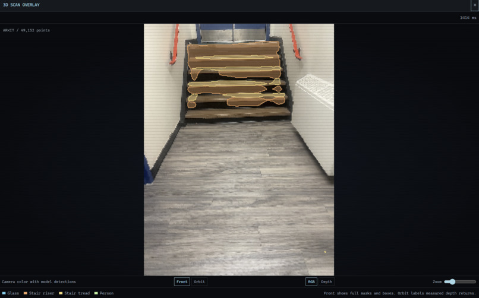
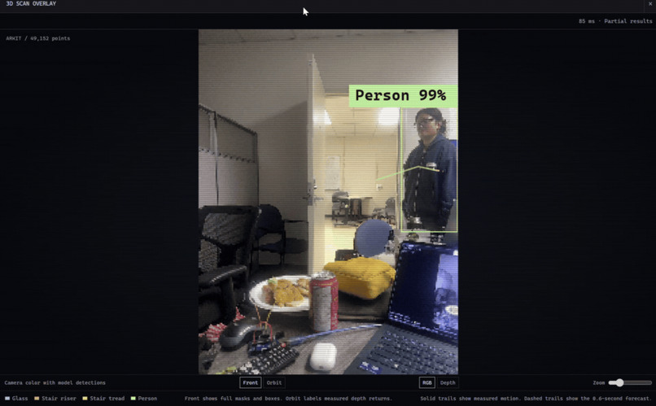
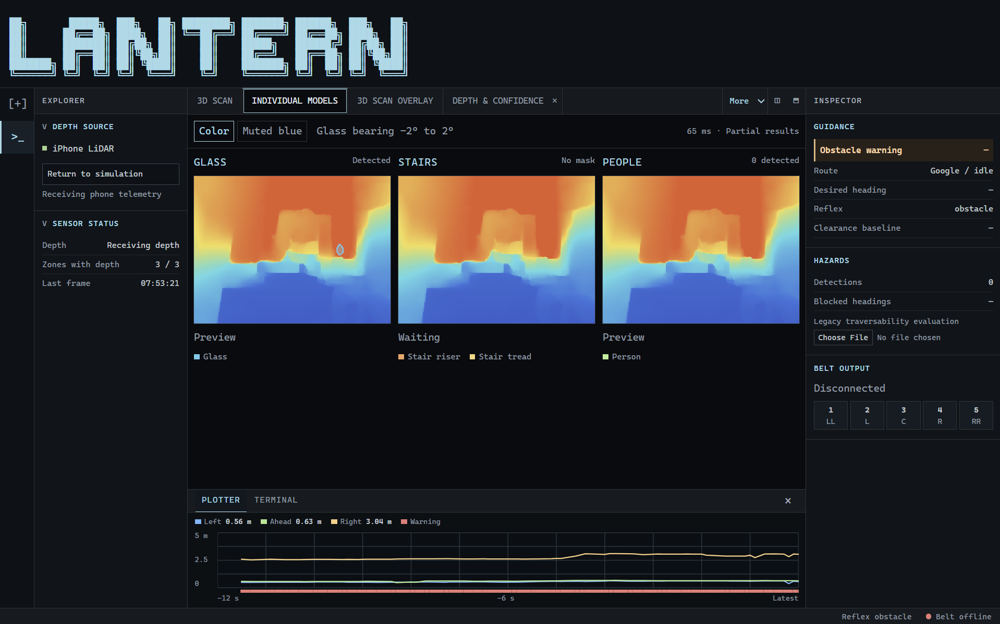
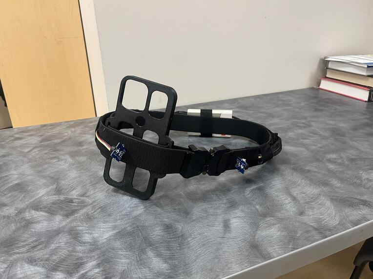

Lantern
An assistive navigation prototype that connects iPhone LiDAR, on-device hazard detection, and a wearable belt to turn nearby obstacles and walking directions into physical cues.

Project Summary
- An assistive navigation prototype built at HackCamp 2026.
- Three connected parts: an iPhone app, a dashboard and endpoint server, and a wearable belt.
- Combined LiDAR clearance, local hazard models, and Google walking routes.
- Sent directional and warning cues to an ESP32 belt over Bluetooth LE.
- Built the entire iPhone app, telemetry dashboard, and endpoint server.
- Integrated the team's hazard models and belt into the navigation workflow.
Overview & My Role
Lantern explores how a phone and a wearable can communicate walking directions and nearby hazards without requiring someone to keep looking at a screen. The phone measures the space ahead, runs hazard models locally, and combines that information with a walking route to choose a direction or issue a warning.
I built the entire iPhone app, browser dashboard, and endpoint server, including the app interface, native sensor integration, navigation logic, model integration, Bluetooth connection, and live telemetry views. My teammates worked on model training, the Databricks pipeline, and the physical belt.
iPhone App
The app combines a React Native and TypeScript interface with a native Swift module for ARKit depth, Core ML inference, speech input, and Bluetooth communication. Google walking routes supply the route heading; local clearance and hazard geometry determine whether a direction is usable.
- Local obstacle warnings: a center-zone LiDAR reading within 0.85 m can trigger a warning independently of object recognition.
- On-device hazard models: glass and stair segmentation, plus person detection, add context to the measured depth. The person tracker projects motion up to 0.6 seconds ahead.
- Accessible destination input: spoken destinations, Siri integration, VoiceOver support, and spoken route announcements reduce reliance on visual controls.
- Local processing: LiDAR warnings and hazard inference run on the phone. Route search and Google navigation require an internet connection.


Telemetry Dashboard & Endpoint Server
I built the React and Vite dashboard to inspect what the phone was seeing and why the guidance system was issuing a particular cue. It brings the 3D scan, model overlays, depth and confidence views, clearance plots, and belt commands into one workspace.
The endpoint server receives guidance and visual telemetry from the phone and makes the latest snapshots available to the dashboard. A separate upload endpoint accepts explicitly recorded sessions for the team's Databricks workflow, keeping the data-service credentials on the server.
- 3D scan inspection: camera-aligned and orbit views, with RGB or depth coloring.
- Model debugging: individual glass, stair, and person previews alongside combined overlays.
- Guidance visibility: live zone distances, detected hazards, route state, and the outgoing belt cue.
- Repeatable scenarios: a simulator for obstacles, crossing people, and sensor dropout, plus opt-in session recording for later analysis.

Hardware Belt
The physical prototype combines a phone mount, an ESP32 controller, and three buzzers positioned around a belt. The app sends Bluetooth LE commands for directional pulses and rapid obstacle warnings. Firmware silences the buzzers when the connection drops or commands stop arriving.
My teammates built the belt; I worked on the app-side connection and guidance integration that turns the phone's sensor and route information into belt output.

Demo
The project demo brings together the phone, live dashboard, and wearable prototype.